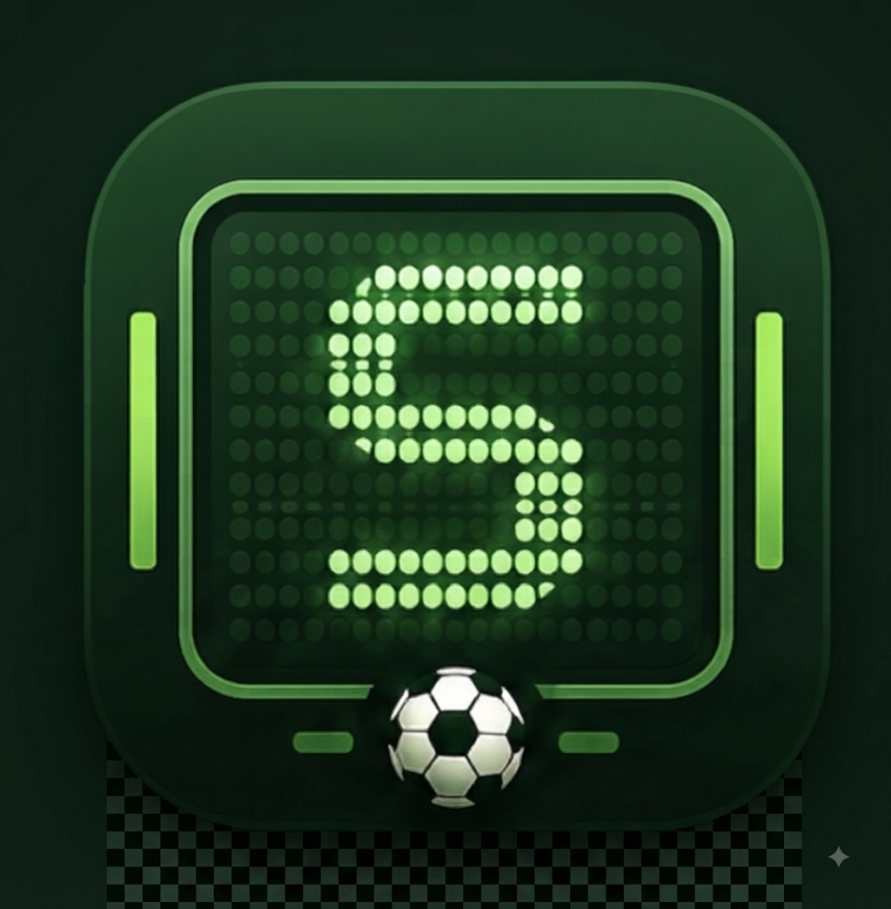

Gizlilik Politikası
Uygulamada kullanılan veriler ve kullanıcı tercihleri hakkında bilgi edinin.
Politikayı incele →
SKORBORDFutbol tahmin topluluğu
Skorbord; fikstürleri takip edebileceğin, maç sonuçlarını tahmin edebileceğin ve performansını diğer futbolseverlerle karşılaştırabileceğin ücretsiz bir mobil uygulamadır.
Uygulamada kullanılan veriler ve kullanıcı tercihleri hakkında bilgi edinin.
Politikayı incele →Tahmin, puan, dijital ödül ve uygulama kullanım kurallarını okuyun.
Koşulları incele →Hesabınız, tahminleriniz veya uygulamayla ilgili yardım alın.
Bize ulaşın →